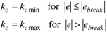
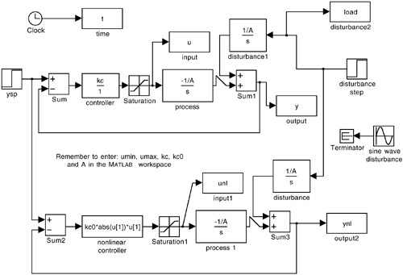

| 1: | Develop a nonlinear model for the rate of change of tank height for the horizontal vessel orientation shown in Figure M10-1b. Consider a surge vessel that has a diameter of 1 m and a length of 2 m, with low- and high-level alarms set at 20% and 80%. Also, assume that the height setpoint is 0.5 m, and the steady-state flow rate is 0.5 m3/min. The steady-state flow rate is 0.5 m3/min, so assume that the inlet flow rate can vary between 0 and 1 m3/min. Design a proportional controller for this system. For the same disturbances given in the example, compare the performance of the horizontal tank with that of the vertical drum. |
| 2: | Implement a so-called gap controller with the following form

on the level control problems discussed in this chapter. Revise the SIMULINK diagram shown in Figure M10-6 for your simulations. Discuss your selection of kcmin, kcmax, and ebreak.
 |